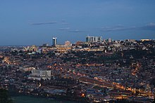

Economy of Rwanda
This article needs additional citations for verification. (February 2013) |
|  | |
| Currency | Rwandan franc (RWF, FRw) |
|---|---|
| calendar year | |
Trade organisations | AU, AfCFTA, WTO, ECCAS, EAC, COMESA |
Country group | |
| Statistics | |
| Population | |
| GDP | |
| GDP rank | |
GDP growth |
|
GDP per capita | |
GDP per capita rank | |
GDP by sector |
|
| 6.9% (2020 est.)[6] | |
Population below poverty line | |
| 43.7 medium (2016)[8] | |
Labour force | |
Labour force by occupation |
|
| Unemployment | |
Main industries | cement, agricultural products, small-scale beverages, soap, furniture, shoes, plastic goods, textiles, cigarettes |
| External | |
| Exports | |
Export goods | coffee, tea, hides, tin ore |
Main export partners |
|
| Imports | |
Import goods | foodstuffs, machinery and equipment, steel, petroleum products, cement and construction material |
Main import partners | |
FDI stock |
|
Gross external debt | |
| Public finances | |
| −4.3% (of GDP) (2017 est.)[5] | |
| Revenues | 1.943 billion (2017 est.)[5] |
| Expenses | 2.337 billion (2017 est.)[5] |
| Economic aid | recipient: $285 Million (2015) |
All values, unless otherwise stated, are in US dollars. | |
{kind=link}
The economy of Rwanda has undergone rapid industrialisation due to a successful governmental policy. It has a mixed economy.[13] Since the early-2000s, Rwanda has witnessed an economic boom, which improved the living standards of many Rwandans. The President of Rwanda, Paul Kagame, has noted his ambition to make Rwanda the "Singapore of Africa".[14] The industrial sector is growing, contributing 16% of GDP in 2012.[15]
History
[edit]{kind=link}
Before the civil war and genocide
[edit]In the 1960s and 1970s, Rwanda's prudent financial policies, coupled with generous external aid and relatively favorable terms of trade, resulted in sustained growth in per capita income and low inflation rates. However, when world coffee prices fell sharply in the 1980s, growth became erratic.
Compared to an annual GDP growth rate of 6.5% from 1973 to 1980, growth slowed to an average of 2.9% a year from 1980 through 1985 and was stagnant from 1986 to 1990. The crisis peaked in 1990 when the first measures of an IMF structural adjustment program were carried out. While the program was not fully implemented before the war, key measures such as two large devaluations and the removal of official prices were enacted. The consequences on salaries and purchasing power were rapid and dramatic. This crisis particularly affected the educated elite, most of whom were employed in civil service or state-owned enterprises.
During the 5 years of civil war that culminated in the 1994 genocide, GDP declined in 3 out of 5 years, posting a rapid decline at more than 40% in 1994, the year of the genocide. The 9% increase in real GDP for 1995, the first postwar year, signalled the resurgence of economic activity.
After the genocide
[edit]The 1994 genocide destroyed Rwanda's fragile economic base, severely impoverished the population, particularly women, and eroded the country's ability to attract private and external investment. However, Rwanda has made significant progress in stabilizing and rehabilitating its economy. In June 1998, Rwanda signed an Enhanced Structural Adjustment Facility with the International Monetary Fund. Rwanda has also embarked upon an ambitious privatization program with the World Bank.
In the immediate postwar period—mid-1994 through 1995—emergency humanitarian assistance of more than $307.4 million was largely directed to relief efforts in Rwanda and in the refugee camps in neighboring countries where Rwandans fled during the war. In 1996, humanitarian relief aid began to shift to reconstruction and development assistance.
The United States, Belgium, Germany, the Netherlands, France, the People's Republic of China, the World Bank, the UN Development Programme and the European Development Fund will continue to account for the substantial aid. Rehabilitation of government infrastructure, in particular the justice system, was an international priority, as well as the continued repair and expansion of infrastructure, health facilities, and schools.
After the Rwandan Genocide, the Tutsi-led government began a major program to improve the country's economy and reduce its dependence on subsistence farming. The failing economy had been a major factor behind the genocide, as was overpopulation and the resulting competition for scarce farmland and other resources. The government focused primarily on building up its manufacturing and service industries and eliminating barriers to trade and development.
{kind=link}
The Government of Rwanda posted a 13% GDP growth rate in 1996 through improved collection of tax revenues, accelerated privatization of state enterprises to stop the drain on government resources, and continued improvement in export crop and food production. Tea plantations and factories continue to be rehabilitated, and coffee, always a smallholder's crop, is being more seriously rehabilitated and tended as the farmers' sense of security returns.
Coffee production of 14,578,560 tons in 2000 compares to a pre-civil war variation between 35,000 and 40,000 tons.[16] By 2002 tea became Rwanda's largest export, with export earnings from tea reaching US$18 million equating to 15,000 tons of dried tea. Rwanda's natural resources are limited. A small mineral industry provides about 5% of foreign exchange earnings. Concentrates exist of the heavy minerals cassiterite (a primary source of tin), and coltan (used to manufacture electronic capacitors, used in consumer electronics products such as cell phones, DVD players, video game systems and computers).
By mid-1997, up to 75% of the factories functioning before the war had returned to production, at an average of 75% of their capacity. Investments in the industrial sector continue to mostly be limited to the repair of existing industrial plants. Retail trade, devastated by the war, has revived quickly, with many new small businesses established by Rwandan returnees from Uganda, Burundi, and the Democratic Republic of the Congo.
Industry received little external assistance from the end of the war through 1995. Beginning in 1996–97, the government became increasingly active in helping the industrial sector to restore production through technical and financial assistance, including loan guarantees, economic liberalization, and the privatization of state-owned enterprises. In early 1998, the government set up a one-stop investment promotion center and implemented a new investment code that created an enabling environment for foreign and local investors. An autonomous revenue authority also has begun operation, improving collections and accountability.[citation needed]
Cassiterite production peaked at 1,000 tonnes in 1990, but was under 700 tonnes in 2000. Recorded coltan production has soared from 147 tonnes in 1999 to 1,300 tonnes in 2001, and coltan was the country's biggest single export earner in 2001. At least part of the increase in production is because of new mines opening up in Rwanda. However it is true, as has frequently been observed, that the increase is also because of the fraudulent re-export of Congolese coltan. In addition to the well-publicised involvement in this trade of the Rwandan Defence Force (RDF), another important factor in the coltan re-export is that international dealers are under pressure not to buy from the DRC, thus increasing the incentive for DRC coltan to be re-exported as Rwanda's. Rwanda is also alleged to be trading in fraudulently exported gold and diamonds from the DRC.[17]
Current economy and economic prospects
[edit]The country entered a high period of economic growth in 2006, and the following year managed to register 8% economic growth, a record it has sustained since, turning it into one of the fastest-growing economies in Africa. This sustained economic growth has succeeded in reducing poverty and also reducing fertility rates, with growth between 2006 and 2011 reducing the percentage of the country's population living in poverty from 57% to 45%.The country's infrastructure has also grown rapidly, with connections to electricity going from 91,000 in 2006 to 215,000 in 2011.[18] Rwanda wants to achieve Middle Income Country status by 2035 and High-Income Country status by 2050.[19]
Existing foreign investment is concentrated in commercial establishments, mining, tea, coffee, and tourism. Minimum wage and social security regulations are in force, and the four prewar independent trade unions are back in operation. The largest union, CESTRAR, was created as an organ of the government but became fully independent with the political reforms introduced by the 1991 constitution.
In 2016, Rwanda was ranked 42nd and second best country in Africa to do business in the Mara Foundation-The Ashish J Thakkar Global Entrepreneurship Index report.[20]
However, a recent research in the UK-based political science journal, Review of African Political Economy, indicates that economic growth may be slower than what official figures suggest. Researchers stated that average consumption per household closely followed growth in GDP per capita from 2000 to 2005, but diverged afterwards when average consumption per household stagnated despite huge improvements in GDP per capita from 2005 to 2013.[21]
Agriculture and primary resources
[edit]{kind=link}
.svg){kind=link}
Rwanda produced in 2019:[22]
- 2.6 million tons of banana;
- 1.2 million tonnes of sweet potato;
- 1.1 million tons of cassava;
- 973 thousand tons of potato;
- 484 thousand tons of beans;
- 421 thousand tons of maize;
- 256 thousand tons of pumpkin;
- 171 thousand tons of taro;
- 159 thousand tons of sorghum;
- 131 thousand tons of rice;
- 114 thousand tons of sugarcane;
- 105 thousand tons of tomato;
- 36 thousand tons of pineapple;
- 31 thousand tons of tea;
- 29 thousand tons of coffee;
- 5.4 thousand tons of tobacco;
In addition to other productions of other agricultural products. Products such as bananas, pineapples, tea, coffee, and tobacco are high-value, export-oriented products.[22]
In 2019 agriculture accounted for 29% of the economy of Rwanda.[15]
Rwanda has long relied on coffee as a cash crop. The crash of coffee prices in 1989 caused a great decrease in purchasing power, and increased domestic tensions.
Rwanda's economy suffered heavily during the 1994 Genocide, with widespread loss of life, failure to maintain the infrastructure, looting, and neglect of important cash crops. This caused a large drop in GDP and destroyed the country's ability to attract private and external investment.[23] The economy has since strengthened, with per-capita GDP (PPP) estimated at $2,225 in 2018,[24] compared with $416 in 1994.[24]
{kind=link}
Major export markets include China, Germany, and the United States.[23] The economy is managed by the central National Bank of Rwanda and the currency is the Rwandan franc; in June 2010, the exchange rate was 588 francs to the United States dollar.[25] Rwanda joined the East African Community in 2007 and there were plans for a common East African shilling, which it had been hoped would be in place by 2015,[26] but have not yet reached fruition (2020).
Rwanda is a country of few natural resources,[27] and the economy is based mostly on subsistence agriculture by local farmers using simple tools.[28] An estimated 90% of the working population farms, and agriculture comprised an estimated 42.0% of GDP in 2010.[23] Since the mid-1980s, farm sizes and food production have been decreasing, due in part to the resettlement of displaced people.[29][30] Despite Rwanda's fertile ecosystem, food production often does not keep pace with population growth, and food imports are required.[23]
Crops grown in the country include coffee, tea, pyrethrum, bananas, beans, sorghum and potatoes. Coffee and tea are the major cash crops for export, with the high altitudes, steep slopes and volcanic soils providing favourable conditions. Reliance on agricultural exports makes Rwanda vulnerable to shifts in their prices.[31]
Agricultural animals raised in Rwanda include cows, goats, sheep, pigs, chicken, and rabbits, with geographical variation in the numbers of each.[32] Production systems are mostly traditional, although there are a few intensive dairy farms around Kigali.[32] Shortages of land and water, insufficient and poor-quality feed, and regular disease epidemics with insufficient veterinary services are major constraints that restrict output. A "One Cow per Poor Family Programme" (Girinka), implemented in 2006, distributed 341,065 cows in 2018.[33]
Fishing takes place on the country's lakes, but stocks are very depleted, and live fish are being imported in an attempt to revive the industry.[34]
Mining
[edit]Rwanda's mining industry is an important contributor, generating US$93 million in 2008.[35] Minerals mined include cassiterite, wolframite, sapphires, gold, and coltan, which is used in the manufacture of electronic and communication devices such as mobile phones.[35][36] Production of methane from Lake Kivu began in 1983, but to date has been used only by the Bralirwa Brewery.
In 2019, the country was the 7th largest world producer of tungsten[37] and the 12th largest world producer of tin.[38]
Energy and electrification
[edit]Rwanda has made tremendous strides in improving electrification in the 21st century. A great number of new areas has become electrified through an expansion of infrastructure.
Depletion of the forests will eventually pressure Rwandans to turn to fuel sources other than charcoal for cooking and heating. Given the abundance of mountain streams and lakes, the potential for hydroelectric power is substantial. Rwanda is exploiting these natural resources through joint hydroelectric projects with Burundi and the Democratic Republic of the Congo.
Manufacturing
[edit]Rwanda's manufacturing sector is dominated by the production of import substitutes for internal consumption. The larger enterprises produce beer, soft drinks, cigarettes, hoes, wheelbarrows, soap, mattresses, plastic pipe, roofing materials, and bottled water.[39] Other products manufactured include agricultural products, small-scale beverages, soap, furniture, shoes, cement, plastic goods, textiles and cigarettes.[23]
Tourism and services
[edit]{kind=link}
Rwanda's service sector suffered during the late-2000s recession as banks reduced lending and foreign aid projects and investment were reduced.[40] The sector rebounded in 2010, becoming the country's largest sector by economic output and contributing 43.6% of the country's GDP.[23] Key tertiary contributors include banking and finance, wholesale and retail trade, hotels and restaurants, transport, storage, communication, insurance, real estate, business services and public administration including education and health.[40]
Tourism is one of the fastest-growing economic resources and became the country's leading foreign exchange earner in 2011.[41] In spite of the genocide's legacy, the country is increasingly perceived internationally as a safe destination;[42] The Directorate of Immigration and Emigration recorded 405,801 people visiting the country between January and June 2011; 16% of these arrived from outside Africa.[43] Revenue from tourism was US$115,600,000 between January and June 2011; holidaymakers contributed 43% of this revenue, despite being only 9% of the numbers.[43]
Rwanda is one of only two countries in which mountain gorillas can be visited safely; gorilla tracking in the Volcanoes National Park attracts thousands of visitors per year, who are prepared to pay high prices for permits.[44] Other attractions include: Nyungwe Forest, home to chimpanzees, Ruwenzori colobus and other primates, the resorts of Lake Kivu, and Akagera, a small savanna reserve in the east of the country.[45]
Rwanda's tourism is centred on the attractions of Volcanoes National Park (PNV) with its six volcanoes and the protected population of mountain gorillas made famous by Dian Fossey. Additionally, tourism is drawn to central Africa's largest protected wetland Akagera National Park, with its populations of hippopotami, cape buffalo, zebras, elephants, elands, and other big game animals. Birdwatching-related tourism has a potential to develop as well, especially in Nyungwe National Park, among the largest uncut forest reserves in Africa. Nyungwe National Park is home to over 300 species of birds. And a vast variety of wild life as well.
Several memorial sites associated with the Rwandan genocide have begun to generate significant dark tourism. For example, the Gisozi Genocide Memorial Site in the Gasabo District of Kigali—the burial place of approximately 300,000 victims of the genocide—has a related genocide exhibition area and library and has plans to develop a teaching centre on the history of the genocide. Another major genocide-related memorial centre attracting tourists is the Murambi Genocide Memorial Site housed in the former Murambi Technical School where 45,000 people were murdered and 850 skeletons and mummified remains of the victims are on display.
Two other major memorial sites associated with the genocide are in Kicukiro District: Rebero Genocide Memorial Site where 14,400 victims are buried and the Nyanza-Kicukiro Genocide Memorial Site where 5,000 victims were killed after Belgian soldiers who serving in the United Nations peacekeeping forces abandoned them. In Kibungo Province, the site of the Nyarubuye Massacre is home to the Nyarubuye Genocide Memorial Site where an estimated 20,000 victims were killed after seeking refuge in the Roman Catholic church and homes of the nuns and priest there.
Historical statistics
[edit]The following table shows the main economic indicators in 1980–2023.[46]
| Year | GDP
(in bn. US$ PPP) |
GDP per capita
(in US$ PPP) |
GDP
(in bn. US$ nominal) |
GDP growth (real) |
Inflation (in Percent) |
Government debt (Percentage of GDP) |
|---|---|---|---|---|---|---|
| 1980 | 2.11 | 453 | 1.49 | −3.6 % | 7.2 % | ... |
| 1985 | 3.66 | 643 | 2.20 | 5.5 % | −1.1 % | ... |
| 1990 | 3.96 | 614 | 2.95 | 0.4 % | 4.2 % | ... |
| 1995 | 2.96 | 541 | 1.47 | 24.5 % | 56.0 % | 120 % |
| 2000 | 5.00 | 667 | 2.05 | 8.4 % | 3.9 % | 103 % |
| 2005 | 8.28 | 938 | 2.94 | 9.4 % | 9.1 % | 67 % |
| 2006 | 9.32 | 1,036 | 3.32 | 9.2 % | 8.8 % | 24 % |
| 2007 | 10.30 | 1,120 | 4.07 | 7.6 % | 9.1 % | 24 % |
| 2008 | 11.68 | 1,229 | 5.18 | 11.2 % | 15.4 % | 19 % |
| 2009 | 12.50 | 1,289 | 5.68 | 6.3 % | 10.3 % | 20 % |
| 2010 | 13.58 | 1,356 | 6.12 | 7.3 % | 2.3 % | 20 % |
| 2011 | 14.94 | 1,465 | 6.89 | 8.0 % | 5.7 % | 20 % |
| 2012 | 15.71 | 1,499 | 7.65 | 8.6 % | 6.3 % | 20 % |
| 2013 | 16.70 | 1,555 | 7.82 | 4.7% | 4.2 % | 27 % |
| 2014 | 18.93 | 1,721 | 8.24 | 6.2% | 1.8 % | 29 % |
| 2015 | 20.53 | 1,823 | 8.55 | 8.9% | 2.5 % | 33 % |
| 2016 | 21.98 | 1,905 | 8.70 | 6.0% | 5.7% | 37% |
| 2017 | 23.67 | 2,004 | 9.25 | 3.9% | 4.8% | 41% |
| 2018 | 26.30 | 2,176 | 9.64 | 8.5% | 1.4% | 45% |
| 2019 | 29.31 | 2,369 | 10.35 | 9.5% | 2.4% | 50% |
| 2020 | 28.69 | 2,265 | 10.17 | −3.4 % | 7.7% | 66% |
| 2021 | 33.24 | 2,566 | 11.05 | 10.9% | 0.8% | 67% |
| 2022 | 38.47 | 2,904 | 13.31 | 8.2% | 13.9% | 61% |
| 2023 | 42.34 | 3,137 | 13.93 | 6.2% | 14.5% | 63% |
See also
[edit]- Rwanda
- Energy in Rwanda
- Telecommunications in Rwanda
- Transport in Rwanda
- United Nations Economic Commission for Africa
General:
References
[edit]- ^ "World Economic Outlook Database, April 2019". IMF.org. International Monetary Fund. Archived from the original on 10 October 2020. Retrieved 29 September 2019.
- ^ "World Bank Country and Lending Groups". datahelpdesk.worldbank.org. World Bank. Archived from the original on 28 October 2019. Retrieved 29 September 2019.
- ^ "Size of the resident population". statistics.gov.rw. National Institute of Statistics of Rwanda. Archived from the original on 13 November 2019. Retrieved 5 November 2019.
- ^ a b c d e "World Economic Outlook, April 2023". International Monetary Fund. Retrieved April 11, 2023.
- ^ a b c d e f g h i j k l m n o "The World Factbook". CIA.gov. Central Intelligence Agency. Archived from the original on 9 January 2021. Retrieved 2 February 2019.
- ^ "World Economic Outlook Database, April 2020". IMF.org. International Monetary Fund. Archived from the original on 30 July 2020. Retrieved 18 April 2020.
- ^ "Poverty headcount ratio at $1.90 a day (2011 PPP) (% of population) - Rwanda". data.worldbank.org. World Bank. Archived from the original on 11 December 2019. Retrieved 11 December 2019.
- ^ "GINI Index (World Bank Estimate)". data.worldbank.org. World Bank. Archived from the original on 12 May 2019. Retrieved 12 May 2019.
- ^ "Human Development Index (HDI)". hdr.undp.org. HDRO (Human Development Report Office) United Nations Development Programme. Archived from the original on 15 December 2019. Retrieved 23 November 2022.
- ^ "Inequality-adjusted Human Development Index (IHDI)". hdr.undp.org. HDRO (Human Development Report Office) United Nations Development Programme. Archived from the original on 12 December 2020. Retrieved 23 November 2022.
- ^ "Labor force, total - Rwanda". data.worldbank.org. World Bank. Archived from the original on 31 July 2020. Retrieved 5 November 2019.
- ^ a b "Declining trend in Unemployment rate". statistics.gov.rw. National Institute of Statistics of Rwanda. Archived from the original on 20 October 2020. Retrieved 12 June 2020.
- ^ "Rwanda: Introduction". globaledge.msu.edu. Archived from the original on 2022-07-04. Retrieved 2022-08-18.
- ^ "Singapore's visionary draws followers in Africa". Reuters. 24 March 2015. Archived from the original on 4 January 2018. Retrieved 4 January 2018.
- ^ a b "Annual Report 2019–2020" (PDF). Archived (PDF) from the original on 2021-03-24. Retrieved 2020-12-23.
- ^ Sullivan, Lobga Derick (2016-08-16). "CoffeeBI - Rwanda to Increase Coffee Production for Economic Growth". CoffeeBI | Coffee Business Intelligence. Retrieved 2024-06-28.
- ^ "Rwanda - Economy". Archived from the original on 2011-09-20. Retrieved 2011-05-07.
- ^ "Economic growth pulls Rwandans out of poverty". Archived from the original on 2021-07-21. Retrieved 2021-07-21.
- ^ "The World Bank in Rwanda". Worldbank. April 17, 2022. Archived from the original on August 28, 2022. Retrieved August 26, 2022.
- ^ "Supportive policies prop up Rwanda in inaugural global entrepreneurship index". Archived from the original on 2016-12-02. Retrieved 2016-12-02.
- ^ "Rwanda's growth miracle may be a mirage". 10 August 2017. Archived from the original on 18 January 2021. Retrieved 29 September 2018.
- ^ a b "Rwanda production in 2019, by FAO". Archived from the original on 2018-10-30. Retrieved 2021-04-29.
- ^ a b c d e f CIA 2019.
- ^ a b IMF 2019.
- ^ Namata 2010.
- ^ Lavelle 2008.
- ^ Department of State (III) 2012.
- ^ FAO / WFP 1997.
- ^ WRI 2006.
- ^ Department of State (I) 2004.
- ^ WTO 2004.
- ^ a b MINAGRI 2006.
- ^ Ntirenganya, Emmanuel (January 6, 2019). "97% of needy families benefit from 'Girinka' programme". The New Times. Archived from the original on February 21, 2019. Retrieved February 20, 2019.
- ^ Namata 2008.
- ^ a b Mukaaya 2009.
- ^ Delawala 2001.
- ^ "USGS Tungsten Production Statistics" (PDF). Archived (PDF) from the original on 2021-07-05. Retrieved 2021-04-29.
- ^ "USGS Tin Production Statistics" (PDF). Archived (PDF) from the original on 2021-08-13. Retrieved 2021-04-29.
- ^ "Latest Global Tenders and Bids". Global Tenders. Archived from the original on 2022-04-01. Retrieved 2022-04-16.
- ^ a b Nantaba 2010.
- ^ Birakwate 2012.
- ^ Nielsen & Spenceley 2010, p. 6.
- ^ a b RDB (III) 2011.
- ^ Nielsen & Spenceley 2010, p. 2.
- ^ RDB (IV).
- ^ "Report for Selected Countries and Subjects". IMF. Retrieved 2024-02-26.
Works cited
[edit]- Birakwate, Bruno (2012-03-26). "Google Maps to promote Rwanda's tourism". Rwanda Focus. Archived from the original on 2013-04-18. Retrieved 2012-04-03.
- Delawala, Imtiyaz (7 September 2001). "What Is Coltan?". ABC News. New York, N.Y. Archived from the original on 8 December 2015. Retrieved 12 November 2015.
- Department of State (2004). "Background Note: Rwanda". Background Notes. Archived from the original on 2014-01-14. Retrieved 2012-02-16.
- Department of State (2012). "Background Note: Rwanda". Background Notes. Archived from the original on 2014-04-12. Retrieved 2012-02-16.
- Food and Agriculture Organization / World Food Programme (FAO / WFP) (1 July 1997). "Special Report: FAO/WFP Crop and Food Supply Assessment Mission to Rwanda". Archived from the original on 2 October 2013. Retrieved 13 November 2015.
- Lavelle, John (5 July 2008). "Resurrecting the East African Shilling". East African Business Week. Kampala. Archived from the original on 7 October 2012. Retrieved 13 November 2015.
- Ministry of Agriculture (MINAGRI), Republic of Rwanda (10 June 2006). "Livestock production". Archived from the original on 23 March 2012. Retrieved 13 November 2015.
- Mukaaya, Eddie (15 January 2009). "Mining industry generated $93 million in 2008". The New Times. Kigali. Archived from the original on 4 March 2016. Retrieved 12 November 2015.
- Namata, Berna (28 December 2008). "Rwanda to restock water bodies with fisheries". The New Times. Kigali. Archived from the original on 10 October 2017. Retrieved 16 November 2015.
- Namata, Berna (2010-08-03). "Franc Weakens Against the U.S. Dollar". The New Times. Archived from the original on 2013-11-07. Retrieved 2012-02-16.
- Nantaba, Eriosi (18 October 2010). "Rwanda services sector boosts GDP". East African Business Week. Kampala. Archived from the original on 19 October 2012. Retrieved 16 November 2015.
- Nielsen, Hannah; Spenceley, Anna (April 2010). "The success of tourism in Rwanda – Gorillas and more" (PDF). African Success Stories Study. World Bank & SNV Netherlands Development Organisation. Archived from the original (PDF) on 20 March 2014. Retrieved 16 November 2015.
- Rwanda Development Board (RDB) (III) (2011). "Highlights of Tourist Arrivals in Rwanda January–June 2011" (PDF). Archived (PDF) from the original on 2014-03-20. Retrieved 2012-03-16.
- Rwanda Development Board (RDB) (IV). "National Parks". Archived from the original on 2012-05-11. Retrieved 2012-03-01.
- World Resources Institute (WRI) (2006). "Agriculture and Food: Country profile – Rwanda". EarthTrends: The Environmental Information Portal. Archived from the original on 2 April 2012. Retrieved 16 November 2015.
- World Trade Organization (WTO) (30 September 2004). "Continued reforms and technical assistance should help Rwanda in its efforts to achieve a dynamic economy". Trade policy review: Rwanda. Archived from the original on 2 October 2013. Retrieved 16 November 2015.
External links
[edit]- Economy of Rwanda at Curlie
- Pulitzer Center on Crisis Reporting Rwanda Human Conflict and Environmental Consequences (Video)
- Rwanda latest trade data on ITC Trade Map
- World Bank Summary Trade Statistics Rwanda
- Dawson, Neil M. (2018). "Leaving no-one behind? Social inequalities and contrasting development impacts in rural Rwanda". Development Studies Research. 5 (1): 1–14. doi:10.1080/21665095.2018.1441039.
- Visit Rwanda Archived 2023-05-08 at the Wayback Machine